Money
X-Ray
Contents
| A note from Randy | ||
| 1 | Start here | |
| PART 1: BEFORE YOU START | ||
| 2 | How Money X-Ray works | |
| 3 | What you need | |
| 4 | Getting your statements | |
| 5 | Your privacy | |
| PART 2: RUNNING THE AUDIT | ||
| 6 | Run it, step by step | |
| 7 | Your report, section by section | |
| 8 | Answering its questions | |
| 9 | On a free plan | |
| 10 | Your save block | |
| PART 3: ACTING ON YOUR RESULTS | ||
| 11 | Subscriptions: keep, cut or cancel | |
| 12 | Fees and interest | |
| 13 | Your debt plan | |
| 14 | Your net worth | |
| 15 | Building a budget that holds | |
| PART 4: KEEPING IT GOING | ||
| 16 | The monthly checkup | |
| 17 | If something goes wrong | |
| 18 | How it was tested, and its limits | |
| 19 | A sample report | |
| 20 | Worksheets | |
| 21 | Words you will meet | |
| Your checklist | ||
| Appendix: the full prompt | ||
Hi, I'm Randy Gonzalez.
I made Money X-Ray because I was tired of paying for budgeting apps, one subscription after another, just to see my own money. The other choice was paying hundreds of dollars for a professional audit. And even then, some months I still couldn't tell you where my money was going, or where all of it was coming from.
So I built something simpler. You download your own statements, paste one prompt into the AI app you already use, and it goes through every line for you. It checks that the math adds up, finds your subscriptions and fees, shows where the money goes, and helps you make a plan for your debt.
No app to install. No bank login. No monthly fee. You pay once and use it every month.
I ran it on my own statements first, and the screenshots in this guide come from that run, with my personal details blacked out.
Money X-Ray won't make decisions for you, and it isn't financial advice. It gives you a clear picture, so the next decision is yours.
Money X-Ray turns an AI chat app like ChatGPT or Claude into a careful money investigator. You give it your own bank and credit card statements. It reads every line, checks that each account adds up, and tells you in plain words where your money went, what it's costing you, and what you could change. By the end of this guide you'll have your first full report, a plan for your subscriptions and debt, and a save block you'll use again next month.
| Part | What you do | Chapters |
|---|---|---|
| 1. Before you start | Understand how it works, get your statements, set your privacy | 2 to 5 |
| 2. Running the audit | Paste, upload, read the report, answer a few questions | 6 to 10 |
| 3. Acting on your results | Cut what you don't need, plan your debt, see your net worth, set a budget | 11 to 15 |
| 4. Keeping it going | Monthly checkup, fixes, sample report, worksheets | 16 to 21 |
What you'll get
A report like the one in chapter 19: where every dollar went, each account checked against its statement balances, your subscriptions with their yearly cost, every fee, a debt payoff order, and your net worth. Flip to page to see a full sample before you start.
The fastest path
If you want results tonight: read chapter 4 (getting your statements), then chapter 6 (run it), and come back to the rest after you've seen your report. Once your statements are downloaded, the first run takes about 20 to 30 minutes on a paid plan, longer on a free one. If you like paper, print this guide: the worksheets in chapter 20 are made for it.
Help and refunds: email trypersimosupport@gmail.com with your order number. If Money X-Ray doesn't work for you, you can ask for a refund within 72 hours of buying; we'll first try to help. Version 1.0, November 2026.
Money X-Ray is a set of instructions, called a prompt, that you paste into an AI chat app. The prompt tells the AI exactly how to audit statements: what to check, in what order, what never to count twice, and how to explain the results. You do three things: paste, upload, read.
The $0.00 Check
Before it tells you anything, Money X-Ray proves its math. For every account, it starts with the statement's opening balance, adds every deposit, subtracts every charge, and has to land on the statement's closing balance. The difference should be $0.00.
It doesn't prove every category is right, so glance over the findings and check anything important.
What it never counts twice
- Card payments. Buying groceries on your card is spending. Paying the card from checking later isn't spending again.
- Transfers. Moving money between your own accounts isn't spending. Money moved to savings is saving.
- Repeated rows. Two downloads that overlap can repeat the same transactions. It keeps one copy, and uses the balance check to be sure.
What it finds
| It looks for | For example |
|---|---|
| Where the money goes | Every category by month, with averages and trends |
| Subscriptions | Forgotten apps, price increases, two services doing the same job |
| Fees and interest | Late fees, ATM fees, card interest, annual fees, and how to avoid each |
| Mistakes | A merchant charging you twice, a charge nobody recognizes |
| Hidden accounts | Payments to a card or loan you forgot to upload |
| Your debt | Each balance and interest rate, and the order to pay them off |
| Your net worth | What you own minus what you owe, and what's really free right now |
Why no app, and no bank login
Budgeting apps connect to your bank and charge every month. Money X-Ray reads statements you download yourself, so nothing connects to your bank and nothing keeps charging you. You buy it once, and you can run it again every month.
| What | Details |
|---|---|
| An AI chat app | ChatGPT or Claude, on your phone or computer. Both were tested; Gemini should work but hasn't been tested yet. Free plans work. Paid plans are faster and can run the math in code. |
| Your files | File 2: the prompt (PDF), which you attach or paste into the chat. File 3: the Action Kit, a fillable PDF planner. |
| Your statements | 3 months for every checking account, savings account and credit card: three monthly statements per account, or one download that covers 3 months. 6 months is even better. |
| About 20 to 30 minutes | On a paid plan, once your statements are downloaded. Longer on a free plan, where you type "go" between steps. |
Free plan or paid plan?
| Free plan | Paid plan | |
|---|---|---|
| Works? | Yes | Yes |
| How it does the math | By hand, in small groups, checked twice | In code, all at once |
| Messages | Two accounts at a time; you type "go" | All accounts in one go |
| Uploads | Daily limits; you can paste the CSV text instead | Higher limits |
| Debt plan | Payment order and a rough timeline | Exact debt-free date and total interest |
| PDF report | Copy the report into a notes app and export it as PDF | Can usually make the file for you |
Plan names, prices and limits change and differ by country. Check each app's own site.
Which accounts to include
Every account money goes in or out of, including the one your paycheck, Social Security or pension lands in. All of those count as income. If you leave one out, Money X-Ray will usually spot the payments going to it and tell you there's an account it can't see. It won't guess what's on it.
- Every checking account
- Every savings account
- Every credit card, including store cards
- Venmo, Cash App or PayPal, if you spend from them
- Optional: retirement, investment, mortgage, car and student loan statements
Your statements are already waiting for you. Most people find them in one of three places.
| Where | What to look for |
|---|---|
| Your bank or card app | "Statements", "Documents", "eStatements" or "Account services". Usually gives PDFs. |
| Your email | Many banks email a statement every month. Search your inbox for "statement". |
| Your bank's website | The same statements, plus a "Download" or "Export" button on the transactions page that gives CSV files. |
Tip: download everything first, then start the chat. Hunting for files mid-chat is the slowest part of the whole process.
What it looks like in a banking app
An example from one big bank's iPhone app, with personal details, account numbers and the bank's name blurred. Other banks and card apps work much the same way: look for Statements or Documents, pick the month, then share or download it. The menu names differ a little from bank to bank.
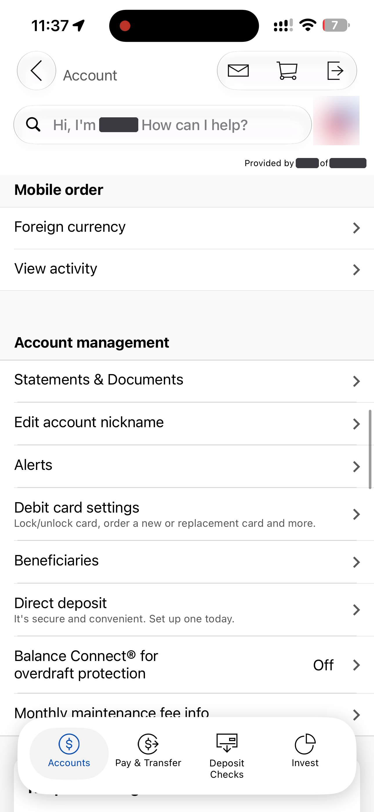
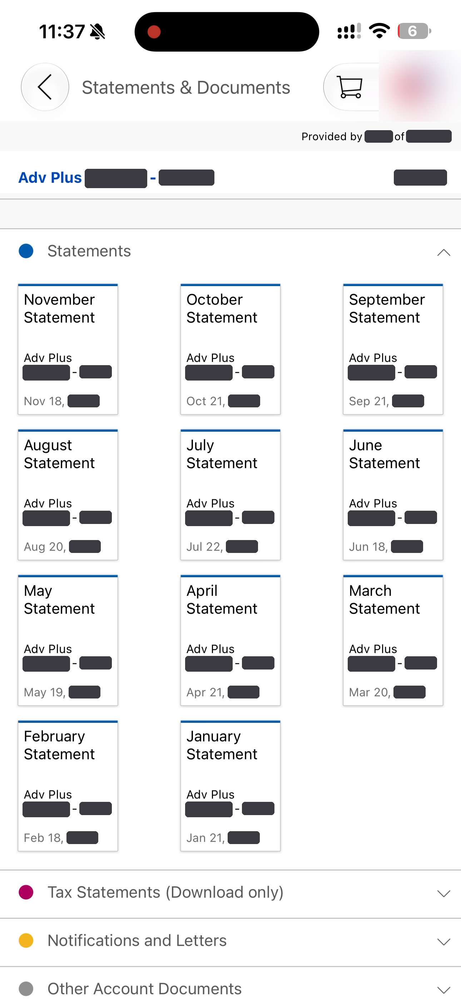
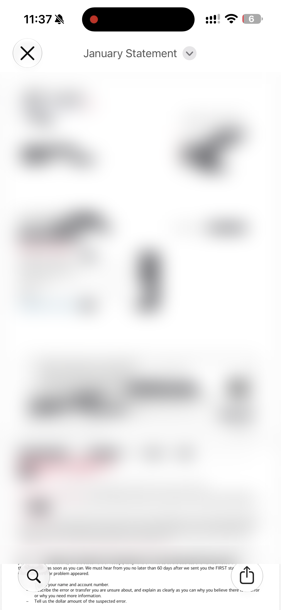
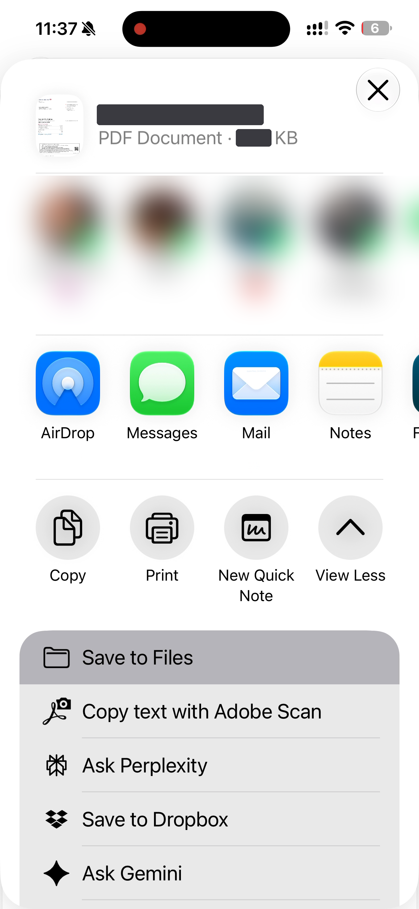
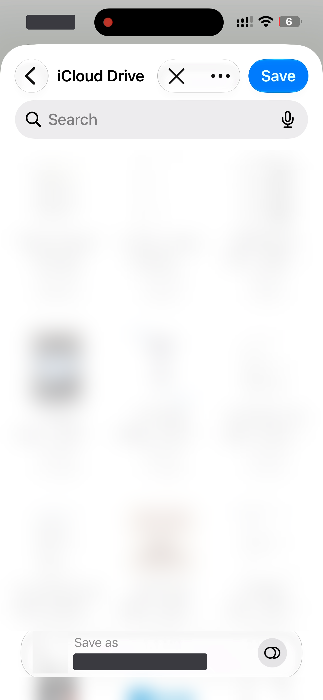
Repeat for each month and each account. On Android, use Download or Share, then save to your files. Credit unions work the same way. Cash App, Venmo and PayPal keep monthly statements in the app or on their website, usually under Statements or Documents.
CSV or PDF?
Three months per account
One monthly statement covers one month. For a three-month audit, download three monthly statements for every account (for example January, February and March), or one CSV download from the website that covers all three months. Name files clearly so you can pick them quickly on your phone: "Chase checking Jan", "Visa Feb".
Why three? With one month, Money X-Ray can't show trends or price increases, a one-off bill can make the month look unusual, and "averages" are just that month. It still works, and it tells you what it couldn't check.
Include the balance
The $0.00 Check needs each account's opening and closing balance. PDFs show them on the first page. Many checking CSV files include a running balance column. Credit card CSVs usually don't, so for cards, upload the PDF statements. If you only have CSVs for a card, it asks for that card's opening and closing balance (in the card app) so it can still check it. If a file has no balances at all, Money X-Ray says that account isn't balance-checked and asks you about it.
Your statements go only to the AI app you choose. Money X-Ray never sees them, never connects to your bank, and never asks for passwords, logins or your Social Security number.
What's in your files
- CSV downloads usually contain dates, descriptions and amounts, with no account number, name or address. Usually nothing to cover.
- Bank PDFs show your name and address, and some show the full account number. Cover them before uploading if you can, for example with your phone's markup tool.
What the AI is told to do
- Never write out a full account number. It uses nicknames such as "Chase checking" or "Visa card", and in exports it removes account numbers, reference numbers, employer names and towns.
- Turn other people's names into initials, for example the friend who paid you back through Zelle.
- Leave addresses and personal IDs out of every reply, save block and export.
Your AI app's own settings
Each AI company has its own privacy policy, and your uploads follow it. Most apps let you control whether your chats are saved or used to improve their models. Look in the app's settings before your first run, and choose what you're comfortable with.
| App | Where to look (November 2026) |
|---|---|
| ChatGPT | Settings, Data controls, "Improve the model for everyone". Or use a Temporary Chat, which isn't saved to your history. |
| Claude | Settings, Privacy: the setting that allows your chats to be used to improve Claude. |
| Gemini | Gemini Apps Activity (Keep Activity). |
To remove your statements from the app afterwards, delete the chat. Settings and their names change, so check them yourself.
When you share results
If you post your findings or show them to someone, black out names, account endings, addresses and anything that points to where you live or work. That's exactly how the screenshots in this guide were prepared.
The screenshots in Part 2 come from a real run on ChatGPT's paid plan with an earlier version of the prompt, so some wording and the order of sections differ slightly from what you'll see. Personal details, bank names and dollar amounts are blacked out. Other apps look different but follow the same steps.
Step 1. Open a new chat and add the prompt
Start a fresh chat. Attach "2 - Money X-Ray Prompt.pdf" (not this guide) with the + button and send it with a short message such as "Start". Or copy the prompt from that PDF and paste it.
Phone: tap + in the chat, choose Files, and pick the prompt PDF from your Downloads. Computer: drag the PDF into the chat window, or click the + or paperclip button.

Step 2. It asks for your statements, and nothing else
No questionnaire. One short message: what to upload, and that it will work on its own once the files are in.


Step 3. Upload everything, then type "done"
Select all your statement files at once. If the app won't take them all, send a few at a time with a note like "More coming". When the last ones are in, type done.
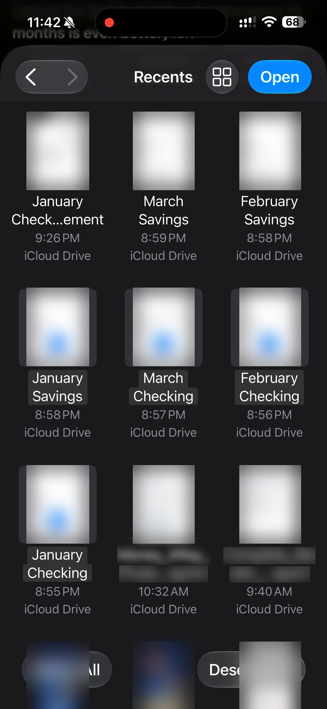
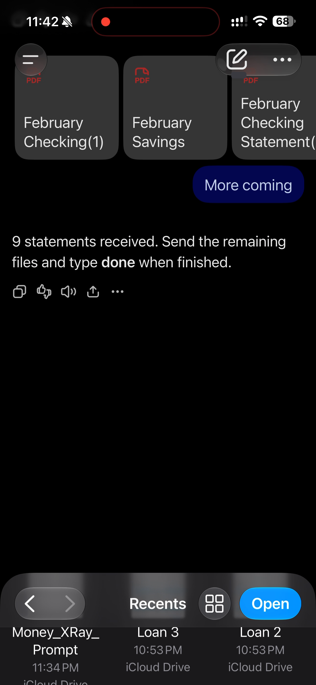
Step 4. Let it work
It identifies each account, removes repeated rows, labels every transaction, matches card payments and transfers between your accounts, and runs the $0.00 Check. On a paid plan this happens in one go. On a free plan it works two accounts at a time and asks you to type go. You never need to ask "are you done?": if it stops partway, type go.
Step 5. Read the report, answer, choose
The report arrives on its own, then a save block to copy, then a short list of questions. After you answer, you get a menu of next steps. Chapters 7 to 10 walk through each part.
The report always comes in the same order. Where the money goes comes first, because that's the question you came with.
| # | Section | What it tells you |
|---|---|---|
| 1 | The answer | One paragraph: where the money goes and the three biggest findings |
| 2 | How much to trust this | The $0.00 Check for each account, what was excluded, what was a guess |
| 3 | Money in vs. money out | Income, spending, saved and left over, each month |
| 4 | Spending by category | Each category per month, its average and its share |
| 5 | Trends | What rose or fell, and the transactions behind it |
| 6 | Subscriptions | Every recurring charge with its yearly cost and any warning flags |
| 7 | Fees and interest | Every fee, and how to avoid it next time |
| 8 | Debt | Each balance, its rate, this month's interest, and the payoff order |
| 9 | Net worth | From your statements, plus liquid net worth |
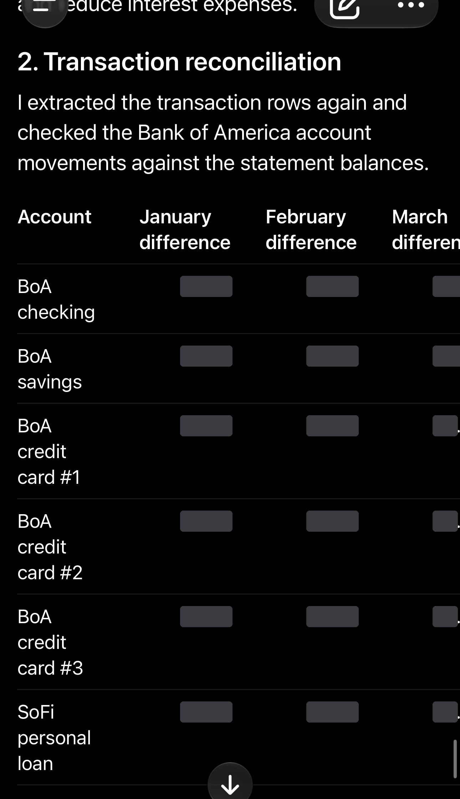

Reading "left over"
Many people find they have money left over on paper and still feel broke. The report says where that money actually went: sitting in an account you don't look at, paying down or building up a card, or going to an account you didn't upload. That one line is often the most useful thing in the whole report.
Reading the flags
| Flag | What it means | What to do |
|---|---|---|
| Price increase | A subscription now costs more than before | Decide if it's still worth it at the new price |
| Overlapping services | Two or more services doing the same job | Keep the one you use most |
| Possible double charge | Same merchant, same amount, same day, different reference | Check with your card issuer; you may be owed a refund |
| Unknown merchant | A charge it can't identify | Look it up or call your bank |
| Account not uploaded | Payments to a card or loan it can't see | Upload that statement, or tell it the balance and APR |
| My guess | A label it chose because it couldn't be sure | Confirm or correct it in the question list |
Some apps draw charts, sliders and calculators, like ChatGPT in the screenshots. Others use plain tables. The numbers come from the same checks either way.
After the report, Money X-Ray asks only about things it couldn't work out on its own. There are usually no more than 8 questions, and each one comes with its best guess.
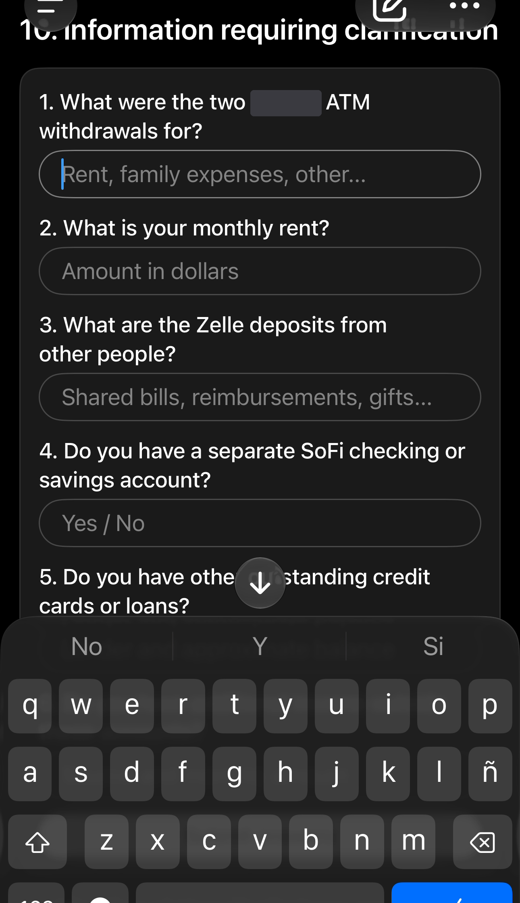
The kinds of questions you'll see
- "$45 from J.M. on Oct 16. My guess: paying you back for the Oct 15 dinner. Right?"
- "SQ *JMK LLC, $45 each month. My guess: unknown. What is it?"
- "$175 a month goes to DISCOVER, but you didn't upload that card. Upload it, or tell me the balance."
- "Any cash money that's not on these statements? Skip if none."
Telling it about cash
Cash never shows up on a statement, so it asks once. Answer in plain words, one item per line: what it was, how much, in or out, and how often. For example, "I mow lawns for about $80 a week, cash" or "the $100 ATM cash paid the babysitter". It converts weekly amounts to monthly ones and never counts ATM cash twice. Your answers stay labeled as reported by you, separate from the statement totals.
Then the menu
After your answers, Money X-Ray updates the report and offers a menu. Pick any options by number, all optional, and include what each pick needs in the same reply (what to cut and your goal, your debt amounts and method, your home and car values) so it can do everything in one go:
| # | Option | What you get | Chapter |
|---|---|---|---|
| 1 | Cut costs | Tell it what to cut and your monthly goal; it totals the savings and compares them with the goal | 11, 12 |
| 2 | Debt-free date | Your payoff plan; tell it your extra amount on top of the minimums, idle cash, cushion and method. Exact date with a code tool; order and rough timing without | 13 |
| 3 | Full net worth | Add home, car, loan and retirement values | 14 |
| 4 | Budget | A target for every category, built from your averages | 15 |
| 5 | Spreadsheet export | Your transactions as CSV to import into Notion, Google Sheets or Excel | below |
| 6 | PDF report | Everything in one file, or how to save it as one on a free plan | below |
| 7 | Fill my Action Kit | Upload the Action Kit PDF; it fills in your trackers | below |
| 8 | Monthly checkup | How to come back next month | 16 |
Spreadsheet export
With a code tool, you get one CSV file with every account. Without one, it gives you each account's transactions as CSV text, one account per message. Copy each block into a text file saved as .csv, then import it into Notion, Google Sheets or Excel to sort and filter your own transactions. On a free plan, type go for each account; it can take six or more replies, so it's easiest on a computer.
Action Kit
The Action Kit is a separate fillable PDF: your snapshot, spending plan, subscriptions, debt plan, savings goals and a monthly log. Upload it in the same chat and type fill my kit. With a code tool, you get it back filled in. Without one, the AI lists the values for the five key pages (snapshot, action plan, debt plan, net worth, checkup log), so you can type it in or write it by hand.
PDF report
If your app can create files, you get a PDF with the findings on the first page and your save block on the last. If it can't, copy the report messages into a notes app or document and export that as a PDF.
Money X-Ray works on free plans. It just takes a few more steps, because free plans limit messages, uploads and tools. What really changes the experience is whether your AI app can run code (a "data analysis" or "code" tool). Free plans often can't; the AI then works more slowly, in smaller steps.
| What changes | What you do |
|---|---|
| It works two accounts at a time | Type go when it asks. Expect to type it 10 or more times in all on a full audit. |
| The report comes in two parts | Type go for the second part |
| Uploads run out for the day | Open the CSV, copy the rows, paste them in. Long file? One month at a time. |
| The chat hits its limit | Open a new chat, paste the prompt and your save block, type continue |
| No code for the math | It adds by hand in small groups and checks every total twice. The $0.00 Check still proves it. |
| Debt plan | You get the order and this month's payments; use a payoff calculator for the exact date |
Right after the report, Money X-Ray gives you a short block of text that starts with SAVE | Money X-Ray, and an updated one at the very end. It holds your accounts, monthly totals, subscriptions, debts and net worth, one line each. Keep the latest one.
Copy it into your notes app. It's your record and your starting point.
- If the chat runs out: new chat, paste the prompt and the save block, type continue.
- Next month: in one message, paste the prompt and the save block and type monthly checkup; then upload last month's statements.
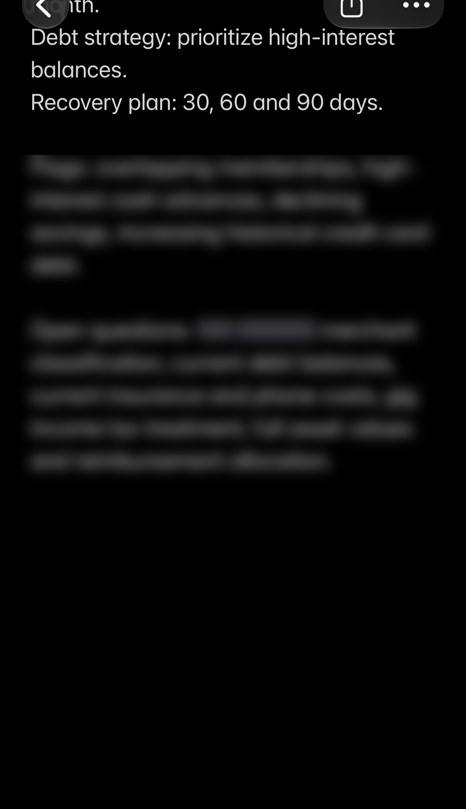
Subscriptions are easy to start and easy to forget. Money X-Ray lists every recurring charge across all your accounts with its yearly cost, which is usually the number that makes people act.
The three-question test
- Did I use it in the last 30 days? If not, cancel it. You can always come back.
- Does another subscription already do this? Two music apps, four video streamers: keep the one you use most.
- Is it worth the yearly cost? $15.99 a month is $191.88 a year. Would you pay that today, in one go?

Pick your cuts from the menu ("Cut costs"), and Money X-Ray adds up the monthly and yearly total. It only counts savings you actually choose.
How to cancel
- App store subscriptions (iPhone or Android): cancel in your phone's subscription settings, not inside the app.
- Websites: look for "Account", then "Membership", "Plan" or "Billing".
- Gyms and clubs: some need a form, a letter or a visit. Ask for written confirmation.
- Can't find it? Search the merchant name on your statement plus "cancel".
A message you can send
A charge you don't recognize
A double charge
Check your receipts or order history first: some repeat charges are real, like two separate orders.
Fees and interest buy you nothing. In the fictional test family, they came to $522.59 in three months. Money X-Ray lists every one and how it could be avoided.
| Fee | How people usually avoid it |
|---|---|
| Card interest | Pay the full statement balance by the due date; work down any carried balance (chapter 13) |
| Late fee | Turn on autopay for at least the minimum, and a due-date reminder |
| Out-of-network ATM fee | Use your own bank's ATMs, or get cash back at a store |
| Monthly maintenance fee | Meet the bank's waiver (direct deposit or minimum balance) or switch to a no-fee account |
| Foreign transaction fee | Use a card without one for purchases from other countries |
| Annual card fee | Ask to switch to the no-fee version of the card |
| Overdraft fee | Turn off overdraft coverage or link a savings account |
Asking for a fee back
Banks and card issuers sometimes remove a fee if you ask, especially the first time. They can also say no.
If you carry a balance on a card or have loans, Money X-Ray lists every debt with its balance, interest rate (APR, the yearly interest rate), minimum payment and what it's costing you this month. Then it shows two proven ways to pay it off.
How both methods work
- Pay the minimum on every debt, every month. Never miss one.
- Put every extra dollar on one target debt.
- When the target is paid off, add its whole payment to the next one. The payment grows as you go.
Cards with more than one rate
One card can hold several balances: purchases, cash advances (often near 28%) and a 0% promo that ends on a set date. Money X-Ray lists each one separately and never blends them into one average. When a promo ends, the remaining balance moves to the regular rate, so a promo balance may need paying first if you can't clear it in time. In the US, payments above the minimum usually go to the card's highest-rate balance first.
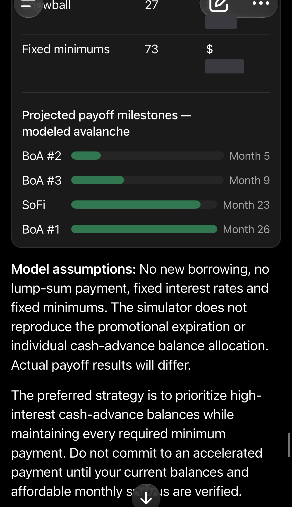
A worked example (fictional family)
The test family has a Discover card at 27.24%, a Visa at 22.99%, a car loan at 6.9% and $450 owed to family. They chose $300 extra a month, plus a one-time $2,587.08 from money sitting idle in checking (after keeping a $2,000 cushion and leaving the next Mastercard bill covered).
| Plan | Order | Debt-free in | Total interest |
|---|---|---|---|
| Avalanche | Discover, Visa, car, family | 23 months | $2,007 |
| Save block | The short text summary you save, to continue later or for next month's checkup. | ||
| Snowball | Family, Discover, Visa, car | 23 months | $2,061 |
| Minimums only | No extra, no lump sum | 62 months | $7,503 |
Fictional family built from US government spending averages, using each card's exact rate and minimum. If your statements don't show those and the AI estimates them, totals come out a little different. Your numbers will differ. Assumes minimums held fixed and no new card spending.
Before you put idle cash toward debt
- Keep a cushion you're comfortable with. Money X-Ray never touches savings or your cushion unless you say so.
- Leave money for bills about to come out of that account, like a card you pay in full.
- Stop adding new charges to the cards you're paying off, or pay new charges in full each month. Otherwise the plan can't work.
On a free plan
You'll get the order, this month's payment for each debt and a rough timeline. For the exact debt-free date and total interest, use a paid plan or any free online debt payoff calculator with the balances, rates and minimums from your report (enter a one-time payment as an extra payment in the first month).
Net worth is everything you own minus everything you owe. It's a snapshot to track over time, not a grade. Money X-Ray builds it from your statements, then lets you add what statements don't show: your home, cars and retirement accounts. Upload a statement for any of them, or type a rough number.
Two numbers worth knowing
The fictional family's snapshot
| Item | Amount |
|---|---|
| Cash and bank (checking, savings, cash at home) | $10,980 |
| Retirement (401(k), 403(b)) | $60,500 |
| Home and two cars | $364,500 |
| Mortgage, car loan, cards, family loan | −$273,426 |
| Net worth | $162,554 |
| Liquid net worth | $154 |
Worth over $160,000 on paper, with almost nothing free once the cards are paid. That gap is why a household earning $7,290 a month can still feel broke, and it's the number to watch shrink month by month.
Cards you pay in full still count as owed until that bill is paid. Values you type in are your estimates and are labeled that way.
Most budgets fail because they start from guesses. Yours starts from three months of real numbers. Pick 4 (Budget) from the menu and Money X-Ray builds the table for you: your average for each category, a target, and the total against your income. Name your own targets in the same reply, or let it suggest them.
Three steps
- Fixed first. Rent or mortgage, insurance, loan payments, phone, utilities. Use the report's averages.
- Then the minimums on every debt, plus the extra amount from your debt plan.
- Then flexible spending. Groceries, dining, shopping, gas, subscriptions. Set a monthly target for each, about 5 to 15% below your average, not a dramatic cut.
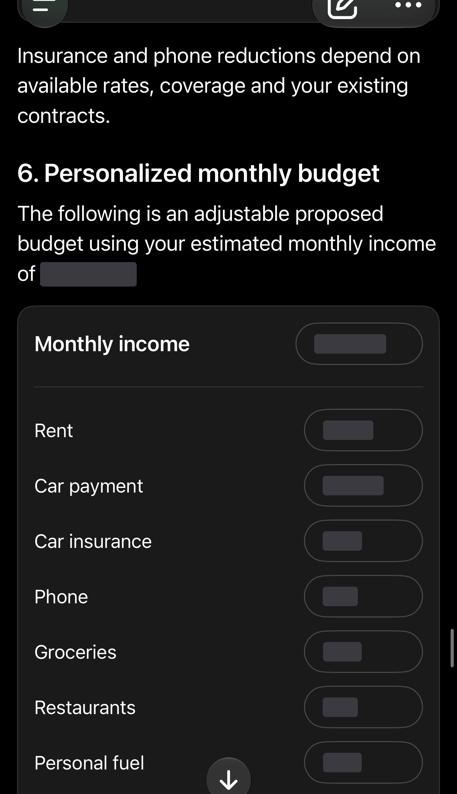
Targets that stick
| Instead of | Try |
|---|---|
| "Stop eating out" | "Dining out under $290 this month", about 10% below your average |
| "Spend less on shopping" | "One shopping trip a week, with a list" |
| "Cut subscriptions" | "Cancel the two I didn't use in 30 days" |
| "Save more" | "Move $100 to savings the day I get paid" |
Make it automatic
- Autopay at least the minimum on every card.
- An automatic transfer to savings on payday, even a small one.
- The monthly checkup (chapter 16) shows which categories moved; compare them with your targets on the worksheet.
Example: the fictional family's first budget
| Category | 3-month average | Target | Why |
|---|---|---|---|
| Housing | $1,385 | $1,385 | Fixed |
| Utilities | $477 | $477 | Fixed for now |
| Car loan | $419 | $419 | Fixed |
| Insurance | $186 | $186 | Fixed |
| Groceries | $586 | $550 | One list, one big shop a week |
| Dining out | $326 | $290 | About 10% below average |
| Shopping | $476 | $420 | One trip a week, with a list |
| Gas | $190 | $190 | Same as now |
| Subscriptions | $142 | $112 | Hulu and Apple Music cancelled |
| Fees and interest | $174 | $174 | Falls as the cards are paid down, Discover first, then the Visa |
| Everything else | $1,046 | $1,046 | Same as now |
| Spending | $5,407 | $5,249 | $158 a month less |
| Extra toward debt | $0 | $300 | From the cuts and the money left over |
Fictional household from chapter 19, take-home pay $7,290 a month. Spending plus $300 extra toward debt and $300 to savings comes to $5,849, leaving room for the card minimums and a cushion. Rounded to the dollar. Targets are examples, not advice.
Once a month, usually 10 to 20 minutes:
- Download last month's statement for each account.
- Open a new chat. In one message, paste the prompt and your latest save block, and type monthly checkup.
- Upload the new statements when it asks.
What it shows you
- New recurring charges, and price increases
- Cancelled services that are still charging you
- Categories that moved since last time
- Debt paid down, and progress on your plan
- The change in your net worth, and what drove it
Then it gives you a new save block. Replace the old one in your notes. If you use the Action Kit, upload it too and type update my kit to add this month's row.
| What happened | Try this |
|---|---|
| A file won't upload, or it's a scan | Download the original PDF or the CSV from the bank, send fewer files at a time, or paste the rows. Long file? One month at a time. |
| It stopped partway | Type go. It picks up where it left off. |
| An account doesn't balance to $0.00 | Check for a missing month or two overlapping downloads. Ask it which dates it couldn't match, then upload the missing statement and ask it to check again. |
| A subscription or category is wrong | Tell it ("Costco is groceries", "it missed Peacock"). It updates every total. |
| The chat ran out | New chat, paste the prompt and your save block, type continue. |
| It mentions an account you didn't upload | Upload that statement, or tell it the balance and APR. |
| The numbers seem off | Ask: "Show me the transactions behind [number]." Everything traces back to your statements. |
Before release, Money X-Ray was tested on a fictional household built from the US Bureau of Labor Statistics' 2025 spending averages: two earners, $7,290 a month take-home, a mortgage, a car loan, child care and three credit cards they uploaded (plus a fourth they forgot to mention). Five accounts, three months, in five different bank formats.
Problems planted on purpose
Fourteen traps were hidden in those statements, including card payments that appear twice, overlapping downloads that repeat rows, a real double charge that must not be removed, a forgotten Discover card, a Netflix price rise, overlapping streaming services, an unknown $45 monthly charge, new bank fees, and warehouse-club purchases mislabeled by the bank.
Results
| Test | Result |
|---|---|
| With a code tool (paid-plan style) | All 219 transactions correct; every account $0.00; every monthly total exact; all 14 traps caught |
| Without a code tool (free-plan style) | Every account $0.00; every monthly total exact to the cent |
| New chat resumed from a save block | Finished correctly with no access to the earlier statements |
| Cash, debt plan and net worth | Matched the expected results |
| Real statements, ChatGPT and Claude | Run by the founder; findings used to improve the prompt |
| Gemini | Should work; not tested yet |
The automated tests were run by AI agents that never saw the answers, all on the same fictional household, which the prompt was improved against. Real households are messier, so treat these results as a good sign, not a guarantee.
What it can't promise
- It can't promise savings. It shows what's there; what you change is up to you.
- AI can make mistakes. The $0.00 Check catches arithmetic errors, not every wrong category. Glance over the findings and check anything important.
- It only sees what you upload. A missing account means missing spending.
- Scanned statements, unusual bank formats and very long files are less reliable.
- It isn't financial, tax or legal advice, and it isn't a professional audit.
The fictional test family from chapter 18, August to October 2026. Not a real household. Built from US spending averages.
1. The answer
The family takes home $7,290 a month and spends about $5,407. After $300 to savings and $175 to a card nobody listed, about $1,400 is left over each month on paper, but it doesn't feel that way: the spare cash piles up in Joint Checking ($4,740 in three months, more than the amount left over, because more went on the Visa than was paid off) while the Visa balance keeps growing and costs about $122 a month in interest. Fees and interest came to $522.59 in three months. They also pay for three video streaming services plus Amazon Prime, and two music services, that overlap.
2. How much to trust this
| Account | Balance check | Notes |
|---|---|---|
| Everyday Checking | $0.00 | Running balance matches every row |
| Joint Checking | $0.00 | Running balance matches every row |
| Visa Rewards | $0.00 | 3 repeated rows removed (overlapping downloads) |
| Mastercard Cash Back | $0.00 | Possible double charge flagged |
| Amex Blue | $0.00 |
Not uploaded: a Discover card ($175 a month in payments) and a savings account ($300 a month in transfers).
3. Money in vs. money out (monthly average)
| Amount | |
|---|---|
| Take-home pay | $7,290.00 |
| Spending | −$5,407.16 |
| Moved to savings | −$300.00 |
| Paid to a card it couldn't see (Discover) | −$175.00 |
| Left over | $1,407.84 |
4. Spending by category (monthly average)
| Category | Average | Share |
|---|---|---|
| Housing (mortgage) | $1,385.00 | 26% |
| Groceries | $585.77 | 11% |
| Utilities | $476.62 | 9% |
| Shopping | $475.87 | 9% |
| Debt payments (car loan) | $419.00 | 8% |
| Dining out | $325.81 | 6% |
| Gas | $190.20 | 4% |
| Insurance | $186.40 | 3% |
| Fees and interest | $174.20 | 3% |
| Everything else (10 categories) | $1,188.29 | 22% |
| Total | $5,407.16 | 100% |
From the statements, after the family's answers (the ATM cash they explained is moved into the categories it paid for); cash paid from their lawn-mowing money isn't included. Shares are rounded, so they may not add to exactly 100%.
5. Trends
September was the most expensive month ($5,926.51): a $312.40 flight, a $284.70 car repair and a $145 vet bill. Dining out rose 34% from August to September, then fell back in October.
6. Subscriptions
| Charge | Monthly | Yearly | Flag |
|---|---|---|---|
| Netflix | $17.99 | $215.88 | Price rose from $15.49 |
| Hulu | $18.99 | $227.88 | Overlaps other streaming |
| Disney+ | $15.99 | $191.88 | Overlaps other streaming |
| Amazon Prime | $14.99 | $179.88 | |
| Spotify | $19.99 | $239.88 | Overlaps Apple Music |
| Apple (likely Apple Music) | $10.99 | $131.88 | Overlaps Spotify |
| Apple (likely iCloud+) | $2.99 | $35.88 | |
| Planet Fitness | $24.99 | $299.88 | Plus a $49 annual fee: $348.88 a year in all |
| SQ *JMK LLC | $45.00 | $540.00 | Unknown merchant |
The Subscriptions category averages $142 a month: these services except the unknown charge, with the $49 annual fee spread over the three months. Without that fee, it's about $126 a month.
7. Fees and interest: $522.59 in three months
Visa interest of $365.73 (about $122 a month at 22.99%), a $95 card annual fee, a $29 late fee, a new $12 monthly checking fee (twice so far), two $3.50 ATM fees and a $1.86 foreign transaction fee.
8 and 9. Debt and net worth (after menu options 2 and 3)
Avalanche order: Discover (27.24%), Visa (22.99%), car loan (6.9%), family loan. With $300 extra a month and a one-time payment from idle cash: debt-free in 23 months instead of 62, about $5,500 less interest. Net worth $162,554; liquid net worth $154.
Their choices
In Cut costs, they gave a goal of freeing up about $300 a month and cancelled Hulu and Apple Music: $29.98 a month, $359.76 a year. The report noted that this was $270 short of the goal, and that the biggest remaining lever was using the idle checking cash against the card debt, Discover first, then the Visa.
Statement checklist
Tick each statement as you download it.
| Account (nickname) | Type | Month 1 | Month 2 | Month 3 | CSV / PDF |
|---|---|---|---|---|---|
Subscription review
| Service | Monthly | Yearly | Used in 30 days? | Keep / cut | Cancelled on |
|---|---|---|---|---|---|
Debt list
| Debt | Balance | APR | Minimum | Order | Paid off |
|---|---|---|---|---|---|
Monthly budget
| Category | 3-month average | Target | Actual | Difference |
|---|---|---|---|---|
| Housing | ||||
| Utilities | ||||
| Groceries | ||||
| Dining out | ||||
| Gas and transportation | ||||
| Insurance | ||||
| Debt payments | ||||
| Subscriptions | ||||
| Shopping | ||||
| Other | ||||
| Total |
Net worth tracker
| Date | Own | Owe | Net worth | Liquid | What changed |
|---|---|---|---|---|---|
Monthly checkup log
| Month | Spent | Left over | Debt paid down | One thing to change |
|---|---|---|---|---|
| Word | What it means |
|---|---|
| APR | The yearly interest rate on a card or loan. 24% APR is about 2% a month. |
| Avalanche | Paying off debts from the highest interest rate to the lowest. |
| Balance check ($0.00 Check) | Opening balance plus money in minus money out must equal the closing balance. |
| Cash advance | Cash taken from a credit card. Usually a higher rate, charged from day one. |
| Card payment | Paying your credit card from checking. Not spending: the purchases were already counted. |
| CSV | A plain spreadsheet file of transactions you can download from your bank's website. |
| Double charge | The same purchase charged twice. Different from a repeated row in a download. |
| Liquid net worth | Cash in the bank minus card balances and short-term debts. |
| Minimum payment | The least you must pay on a card or loan each month to stay current. |
| Net worth | Everything you own minus everything you owe. |
| Promo balance | A balance at a low or 0% rate until a set end date. |
| Prompt | The written instructions you paste into the AI app. |
| Reimbursement | Money someone pays you back for a shared cost. It reduces that category, not income. |
| Save block | The short text summary you save, to continue later or for next month's checkup. |
| Snowball | Paying off debts from the smallest balance to the largest. |
| Statement period | The dates one statement covers, usually about a month. |
| Transfer | Moving money between your own accounts. Not spending. |
Before
- Choose ChatGPT or Claude (Gemini isn't tested yet), and check its privacy settings
- Download 3 months of statements for every checking, savings and card account
- Optional: retirement, investment and loan statements
The audit
- New chat, paste or attach the prompt, send
- Upload all statements, type done
- Type go whenever it asks
- Read the report; look at the $0.00 Check for every account
- Answer the questions, or reply ok
- Copy the save block into your notes
Acting on it
- Pick subscriptions to cancel, and cancel them
- Ask for one fee to be removed
- Choose avalanche or snowball, and make this month's payments
- Add home, car and retirement values for your full net worth
- Set monthly targets for 3 flexible categories
- Set up autopay minimums and a payday transfer to savings
Every month
- Download last month's statements
- In one message: the prompt, the save block and monthly checkup
- Save the new save block
This is the same prompt as in "2 - Money X-Ray Prompt.pdf". Attaching that PDF to the chat is the easiest way to use it.
{{PROMPT}}